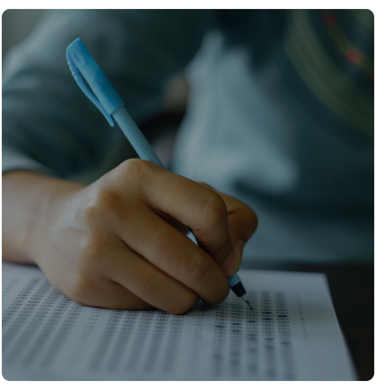
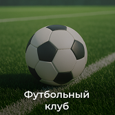
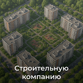
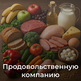
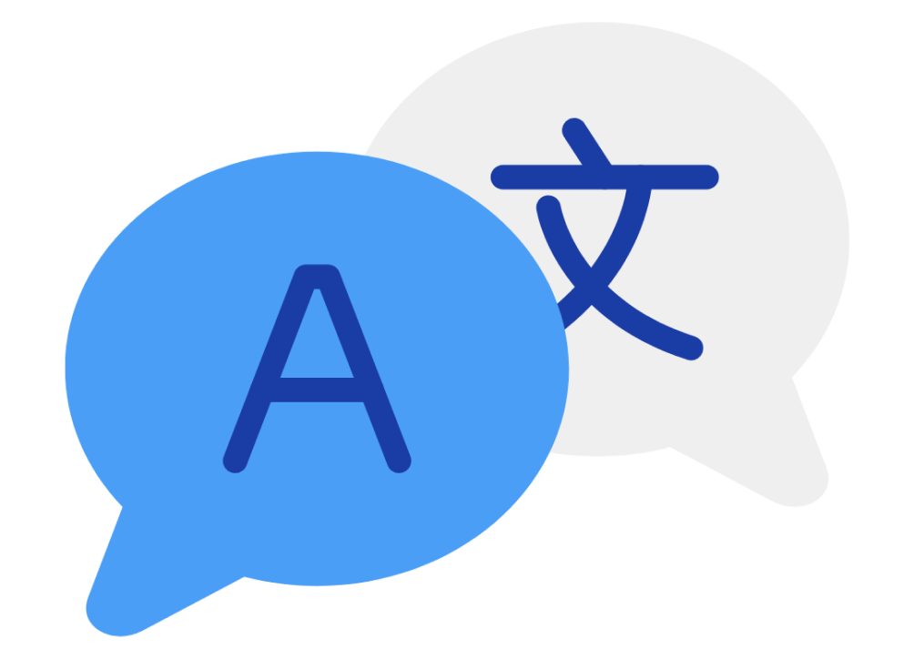
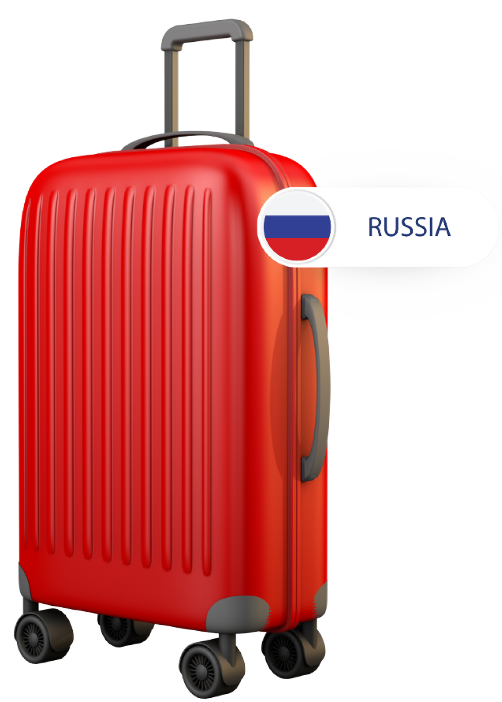
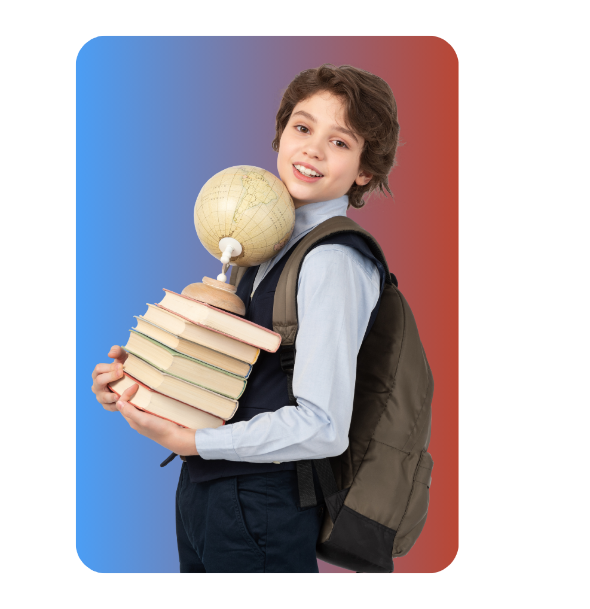

г. Краснодар, ул. Карасунская, 60, оф. 28/2; Брянская, 6
ПН-ПТ 9:00 - 20:00, СБ-ВС — выходные
lway@mail.kubannet.ru



Изучайте иностранные языки с нами!
Мы предлагаем высококачественное обучение иностранным языкам для всех возрастов и уровней подготовки. Наши квалифицированные преподаватели с богатым опытом помогут Вам или Вашему ребенку освоить английский, немецкий, французский, испанский и другие языки. В процессе обучения применяем современные методики, чтобы сделать процесс обучения максимально эффективным и увлекательным.
Наши программы включают: Индивидуальные и групповые занятия Подготовку к международным экзаменам (TOEFL, IELTS, DELF, DELE и другие), ОГЭ и ЕГЭ.

Выполним переводы различного объема и уровня сложности с/на английский, немецкий, французский, испанский, итальянский и другие языки.
Предоставляются услуги устного перевода с выездом в другие города и страны.
The Education Training Centre "L-way" offers language courses for all levels and requirements. From complete beginners to those just needing to brush up their language skills, courses can be tailored to suit the demands of the individual with an emphasis on general study, tourism, business, law, medicine etc. Study can be arranged in groups, or individually, with teachers who have between 15 and 30 years experience teaching Russian to students from over 80 countries. A fundamental beginners course is taught over 5 months (400 hours), which enables students to speak freely in many different situations.
Our course costs $ 300/240/200 per week (20 hours) for tuition in groups of 2/4/6 students and $400 for individuals.
In addition to Russian lessons we can arrange private accommodation with good Russian families, in private apartments or in hotels, to suit the individual. Prices on application (eg. Prices for flats (apartments) vary with conditions - a basic flat costs $250-300 per month). A cultural program is included in the cost of the course (including visits to concerts, theatres, cinemas and the circus, and excursions and picnics to the countryside and the Black Sea Coast). Excursions to the Black Sea Coast can be arranged for additional cost to cover hotel and travel expenses. Help will be freely given in making business contacts anywhere in Russia for those who are interested.
Our school will organize official invitations on completion and receipt an application form. Help with travel arrangements will be provided if this is required. Krasnodar, itself , is situated in the southern-most region of Russia not far from the Black Sea with a subtropical climate making it one of the most pleasant places to live in Russia. It has a population of almost 1 500 000 and the city boasts 3 universities, 3 academies and various other establishments of higher education. There are 5 theatres, a circus and many museums. There are over 120 large businesses in the city. The cost of living is cheaper than in England or the USA and individuals should allow about $100 - 200 per month (depending on personal preferences).


Мы предлагаем обучение по всем школьным предметам по вашему запросу. Наши квалифицированные преподаватели готовы помочь Вам или Вашему ребенку достичь высоких результатов в любой учебной дисциплине.
Также мы специализируемся на подготовке к ОГЭ и ЕГЭ. Индивидуальные и групповые занятия разработаны с учетом всех требований и стандартов, чтобы обеспечить успешное прохождение этих важных экзаменов.
Свяжитесь с нами, чтобы узнать больше и записаться!
Бесплатно также пробное занятие в группе
«Я очень рад, что учусь в L-WAY. Замечательные люди, профессиональные преподаватели. У меня улучшаются английский, произношение, грамматика.»
«У наших преподавателей есть чувство юмора — это помогает учить английский легко и весело.»
«Мне нравятся мои преподаватели. Они замечательные. Из их уроков извлекла много нового. Сами уроки динамичны.»
«По моему мнению, L-WAY - лучший центр в Краснодаре. Если Вы хотите существенно улучшить свой язык - это то место, где следует учиться.»
«Мои учителя всегда помогали мне стремиться к лучшему результату. Это именно то, что делает L-WAY лучшим в городе 🔥»
«Я очень благодарна L-WAY. Здесь я смогла найти профессиональных и доброжелательных учителей. Я сейчас намного увереннее себя чувствую со своим английским, увидела и узнала много интересного.»
Возникновение Образовательного Центра "L-WAY" относится к 1993 году, когда на базе Российско-Американского Института Международного Бизнеса (RAIIB) был создан факультет иностранных языков, а также курсы для желающих получить более углубленные знания по иностранным языкам.
Как самостоятельное негосударственное образовательное учреждение Образовательный Центр "L-WAY" был зарегистрирован 12 января 1998 года. Благодаря высокому качеству обучения, за короткое время своего существования Центр приобрел хорошую репутацию, что позволило обучить уже более тысячи слушателей.
В Центре работают высококвалифицированные преподаватели, прошедшие обучение и стажировку за рубежом, владеющие современными методиками обучения. На более продвинутых уровнях и в зависимости от целей обучения, приглашаются преподаватели носителя языка из Великобритании и США.
Хотите присоединиться к команде наших преподавателей? Наша компания всегда рада новым талантам. Если Вы увлечены обучением и хотите внести свой вклад в развитие наших студентов, присылайте свое резюме на почту:
Мы ценим опыт и энтузиазм и всегда готовы рассмотреть кандидатуры квалифицированных специалистов.
В Центре проводят обучение иностранным языкам для всех желающих, независимо от возраста и образования, а также сотрудников организаций, предприятий и компаний, среди которых можно назвать такие как "Кубань-GSM", "Кипрский Банк развития", "Авиалинии Кубани" и другие.